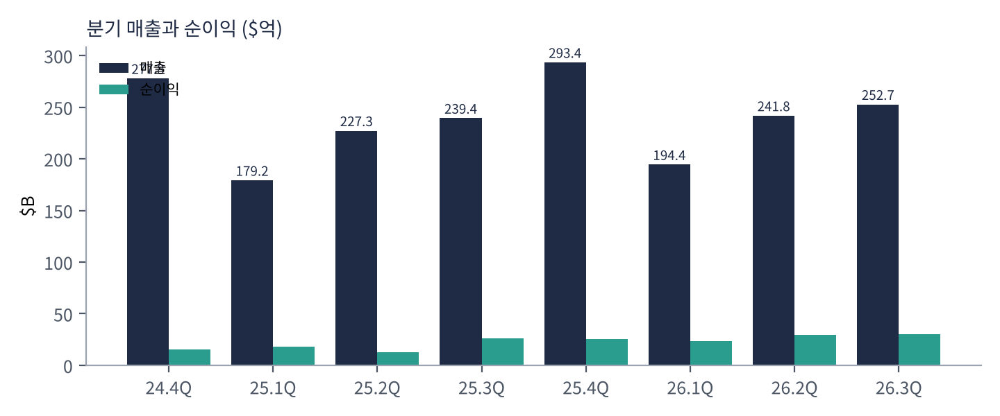
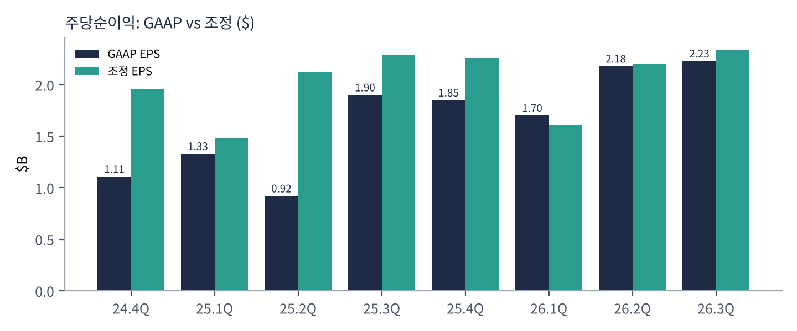
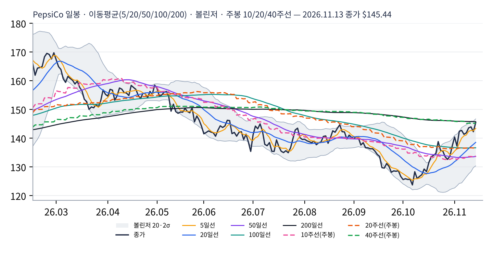
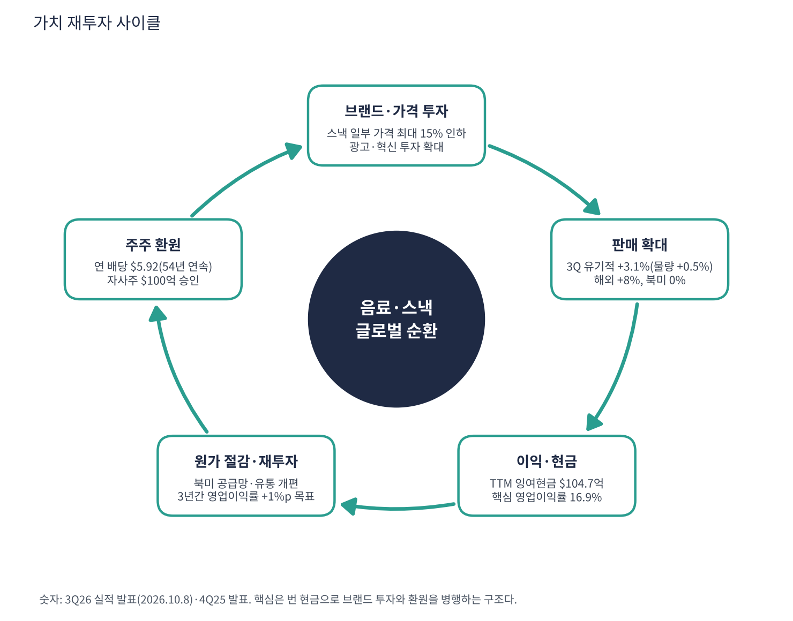

펩시코는 펩시·게토레이 같은 음료와 레이즈·도리토스 같은 스낵을 전 세계에 파는 회사다. 배당·현금흐름이 안정적이지만 북미 물량 성장이 멈춰 있고, 일회성 비용 때문에 낮아 보이는 PEG를 그대로 믿기 어려운 회사다.
| 항목 | 내용 |
|---|---|
| 종목 | PepsiCo (PEP) · NASDAQ · 음료·스낵 · 뉴욕 퍼처스 |
| 밸류에이션 | PER 18.3배 · P/S 1.98배 (11/13 종가 $145.44) |
| 최근 분기(3Q26) | 매출 $252.7억, GAAP EPS $2.23, 조정 EPS $2.34, 유기적 매출 +3.1% |
| 배당 | 연 $5.92, 54년 연속 인상(회사) |
| 현금·부채 | 스캐너: 현금 $111.6억, 총차입금 $518.8억, TTM 잉여현금 $104.7억 |
| 직책 | 인물 | 역할·특징 |
|---|---|---|
| CEO | 라몬 라구아르타 | 2018년부터 CEO. 브랜드 투자·공급망 효율화 병행 |
경영 스타일: '번 현금으로 브랜드에 투자하고 주주에게 돌려주는 구조'. 스낵 일부 가격을 인하해 물량을 방어하고, 북미 공급망·유통을 개편해 3년간 영업이익률 +1%p를 목표로 한다. 7,000명 감원·공장 폐쇄 보도가 있으나 2차 보도다.
유통 개편과 자동화로 비용을 줄이고 지역별 가격·포장을 세분화한다.
저당·기능성 음료와 스낵으로 제품 구성을 넓히는 방향이다.
다음 실적발표는 세 가지 질문에 답하는 자리다.
1. 판매 확대가 이번 분기에 개선되나?
2. 악재 '북미 물량' 부담이 줄어드나?
3. 악재 '가격 인하' 부담이 줄어드나?
한 줄 판정 규칙: 첫 질문의 판매 확대가 좋아지면 약한 고리가 풀리고, 그렇지 않으면 현재 사이클의 약점이 그대로 남는다.
일정: 다음 발표일은 확인 필요(이번 분기 발표 후 일정 미확정). 위 현재값은 이 보고서의 기존 숫자다.
| 분기 | 매출 | 순이익 | EPS | 조정 EPS | 특이 사항 |
|---|---|---|---|---|---|
| 2024.4Q | $277.8억 | $15.2억 | 1.11 | 1.96 | 4분기 값 근사* |
| 2025.1Q | $179.2억 | $18.3억 | 1.33 | 1.48 | |
| 2025.2Q | $227.3억 | $12.6억 | 0.92 | 2.12 | 2분기 구조조정·감액 비용 반영 |
| 2025.3Q | $239.4억 | $26.0억 | 1.90 | 2.29 | |
| 2025.4Q | $293.4억 | $25.4억 | 1.85 | 2.26 | 4분기 값 근사* |
| 2026.1Q | $194.4억 | $23.3억 | 1.70 | 1.61 | |
| 2026.2Q | $241.8억 | $29.8억 | 2.18 | 2.20 | |
| 2026.3Q | $252.7억 | $30.5억 | 2.23 | 2.34 | 3Q 유기적 +3.1%(물량 +0.5%), 해외 +8%·북미 0% |


* 4분기 값은 '연간 − 1~3분기 합' 근사치. 조정 EPS는 트레이딩뷰 Reported(비GAAP)다. 25년 2분기 GAAP 이익은 구조조정 비용 영향이 있다. 분기 설비투자는 구하지 못했다.
흐름 요약: 분기 조정 EPS가 $1.48~2.34 사이에서 계절적으로 움직이며 최근 4분기 합 $8.41이 직전 4분기 $7.85보다 7% 높다. 매출 성장은 낮은 한 자릿수다.
| 항목 | 값 | 비고 |
|---|---|---|
| 3Q 유기적 매출 | +3.1% | 물량 +0.5%(회사) |
| 해외 | +8% | 회사 |
| 북미 | 0% | 회사 |
| 핵심 영업이익률 | 16.9% | 회사 |
해외가 성장을 끌고 북미는 정체다. 부문별 매출 비중은 이번에 구하지 못했다.
펩시코는 '글로벌 음료·스낵 브랜드 포트폴리오를 효율적으로 운영하며 안정적으로 환원'하는 것을 목표로 한다.
| 축 | 최근 움직임 |
|---|---|
| 가격 | 스낵 일부 가격 최대 15% 인하로 물량 방어 |
| 효율 | 북미 공급망·유통 개편, 감원·공장 폐쇄 보도 |
| 환원 | 배당 54년 연속 인상, 자사주 $100억 승인 |

| 이동평균 | 값 | 종가 대비 | 해석 |
|---|---|---|---|
| 5일선 | $143.43 | +1.4% | 현재가가 위 |
| 20일선 | $138.55 | +5.0% | 현재가가 위 |
| 50일선 | $133.64 | +8.8% | 현재가가 위 |
| 100일선 | $136.66 | +6.4% | 현재가가 위 |
| 200일선 | $145.75 | -0.2% | 현재가가 아래 (-0%) |
주봉 흐름: 52주 고점 $171.5(2026.2.12) 이후 하락해 10월 저점 $123.5(2026.10.7)를 찍고 $145까지 회복했다. 현재가는 200일선 $145.75 바로 아래다.
| 규칙 | 기준 | 현재 값 | 신호 |
|---|---|---|---|
| 장기 추세 필터 | 종가 vs 200일선 | $145.44 < $145.75 | 매도 |
| 중장기 교차 | 50일선 vs 200일선 | $133.64 < $145.75 | 매도 |
| 단기 교차 | 20일선 vs 50일선 | $138.55 > $133.64 | 매수 |
| 돈키언 채널 | 55일 고가 $145.78 / 저가 $123.47 | 중간값 $134.62 위 | 매수 |
| 1개월 모멘텀 | 21거래일 수익률 | +13.3% (기준 $128.38) | 매수 |
| 3개월 모멘텀 | 63거래일 수익률 | +5.2% (기준 $138.24) | 매수 |
| 6개월 모멘텀 | 126거래일 수익률 | -2.5% (기준 $149.12) | 매도 |
| 12개월 모멘텀 | 252거래일 수익률 | +0.7% (기준 $144.39) | 매수 |
| 종합 (8개 평균) | +0.25 | 매수 우위 |
해석: 8개 신호 중 매수 5개, 매도 3개(점수 +0.25, 매수 우위)다. 14일 ATR $3.45 (2.4%).
| 가격·조건 | 무엇이 바뀌나 | 의미 |
|---|---|---|
| $145.75 돌파 | 200일선 | 매도 → 매수 |
| 50일선이 200일선 위로 | 50/200 교차 | 매도 → 매수 |
| $149.12 돌파 | 6개월 기준가 | 매도 → 매수 |
| 20일선이 50일선 위로 | 20/50 교차 | 이탈하면 매수 → 매도 |
| $134.62 돌파 | 돈키언 중간값 | 이탈하면 매수 → 매도 |
| $128.38 돌파 | 1개월 기준가 | 이탈하면 매수 → 매도 |
| 구분 | 가격대 | 근거 |
|---|---|---|
| 저항 1 | $145.8 | 200일선 $145.75, 55일 고점 $145.78 |
| 저항 2 | $171.5 | 52주 고점(2026.2.12) |
| 지지 1 | $143.4 / $138.6 | 5일선 $143.4, 20일선 $138.6 |
| 지지 2 | $133.6 / $123.5 | 50일선 $133.6, 55일 저점·52주 저점 $123.5 |
점수는 +0.25로 매수가 약간 우세하다. 14일 ATR이 $3.45로 변동은 작다. 200일선($145.75) 종가 돌파가 확인되면 점수가 올라가므로 돌파 전에는 20일선($138.6) 부근 분할로만 접근하고, 50일선($133.6) 이탈 시 정리한다.
| 악재 요인 | 내용 | 강도 |
|---|---|---|
| 북미 물량 | 북미 유기적 0%, 물량 +0.5% | 높음 |
| 가격 인하 | 스낵 가격 인하로 마진 부담 | 중간 |
| 부채 | 순부채 약 $407억 | 중간 |
| 구조조정 | 감원·공장 폐쇄 보도(2차) | 중간 |
| 티커 | 회사 | PER(TTM) | PEG | P/S | EPS 성장(YoY) |
|---|---|---|---|---|---|
| PEP | 펩시코 | 18.3배 | 0.35 | 1.98배 | +51% |
| KO | 코카콜라 | 29.3배 | 2.34 | 8.17배 | +12% |
| MDLZ | 몬델리즈 | 21.3배 | 1.13 | 2.14배 | +18% |
| KDP | 큐리그 닥터페퍼 | 33.2배 | – | 2.09배 | – |
| MNST | 몬스터 | 42.3배 | 1.66 | 9.41배 | +25% |
| PG | P&G | 25.6배 | – | 4.60배 | – |
PEP 첫 행 PEG 0.35·성장률 +51.4%는 스캐너 값(기저효과)이다. 조정 기준 PEG는 약 2.4다. KDP·PG는 EPS 성장률이 마이너스라 PEG가 없다.
펩시코는 현금성 자산 $111.6억에 비해 차입금 $518.8억이 커 순부채 약 $407억이다. 대신 TTM 잉여현금 $104.7억으로 배당과 자사주를 감당한다.
| 지표 | 값 | 계산·출처 | 해석 |
|---|---|---|---|
| 현금 | $111.6억 | 스캐너 | – |
| 총차입금 | $518.8억 | 스캐너 | 순부채 약 $407.2억(내 계산) |
| TTM 잉여현금흐름 | $104.7억 | 스캐너 | 잉여현금 수익률 5.3% |
| TTM EBITDA | $199.7억 | 스캐너 | 순부채/EBITDA 약 2.0배(내 계산) |
| 기준 | 값 | 비고 |
|---|---|---|
| P/S (TTM) | 1.98배 | 스캐너 |
| 동종 | KO 8.2, MDLZ 2.1, KDP 2.1, MNST 9.4, PG 4.6 | 11/13 스캐너 |
해석: 스트레스 가정(내 가정): P/S 1.6배 $117.5(-19%) · P/S 1.8배 $132.2(-9%) · P/S 2.2배 $161.6(+11%) · P/S 2.4배 $176.3(+21%). 매출총이익률이 높지 않은 식품 업종이라 P/S는 보조 지표다.
| 지표 | 값 | 판정 |
|---|---|---|
| PER (GAAP TTM) | 18.3배 | 스캐너 |
| PER (조정 TTM) | 약 17.3배 | $145.44 ÷ 최근 4분기 조정 EPS $8.41(내 계산) |
| EV / EBITDA | 약 12.0배 | EV 약 $2,389억 ÷ $199.7억(내 계산) |
| EV / 잉여현금 | 약 22.8배 | $2,389억 ÷ $104.7억(내 계산) |
| 방식 | PER | EPS 성장률 | PEG | 판정 |
|---|---|---|---|---|
| 트레이딩뷰 (GAAP TTM) | 18.3배 | +51.4% | 0.35 | 기저효과(25년 일회성 비용으로 GAAP EPS가 낮았음) |
| 일회성 비용 제외 (조정 EPS, 내 계산) | 17.3배 | +7.1% | 약 2.4 | 최근 4분기 $8.41 ÷ 직전 4분기 $7.85 |
| 회사 가이던스 성장 가정(가정·추정) | 17.3배 | 약 3% | 약 5.8 | 가이던스 성장률은 내 가정 |
판정: 트레이딩뷰 PEG 0.35는 낮은 기저 때문에 부풀려진 값이다. 일회성 비용을 뺀 PEG는 약 2.4로 1.0을 크게 넘어 투자 적격 구간(≤1.0)이 아니다.

펩시코의 사이클은 브랜드 투자 → 판매 확대 → 이익·현금 → 원가 절감·재투자 → 주주 환원이다. 번 현금으로 브랜드와 공급망에 다시 투자하고 남는 몫을 환원한다.
| 고리 | 현재 숫자 | 고리 강도 | 약해지는 신호 |
|---|---|---|---|
| ① 브랜드·가격 투자 | 스낵 일부 가격 최대 15% 인하 | 보통 | 가격 인하로 마진 훼손 |
| ② 판매 확대 | 3Q 유기적 +3.1%, 물량 +0.5% | 약함 | 북미 물량 0% 지속 |
| ③ 이익·현금 | TTM 잉여현금 $104.7억 | 강함 | 원가·관세 부담 |
| ④ 원가 절감·재투자 | 공급망 개편, 영업이익률 +1%p 목표 | 보통 | 구조조정 비용 반복 |
| ⑤ 주주 환원 | 배당 연 $5.92, 자사주 $100억 | 강함 | 차입 증가 |
구조: ③⑤는 강하지만 ②판매 확대가 약하다. 물량 성장이 살아나지 않으면 ①의 가격 인하가 이익만 깎을 수 있다.